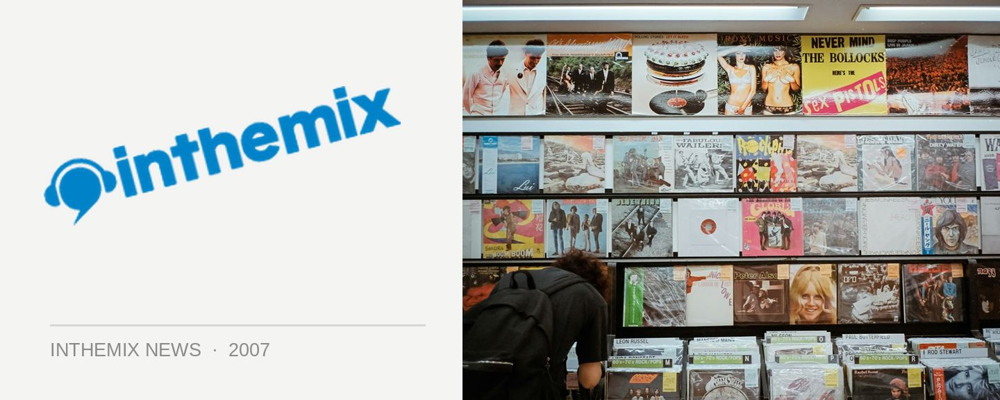

Robert Owens plays SHE
After their highly successful party in June featuring Marshall Jefferson’s first Australian performance in eight years, the SHE crew have locked another big name for their next party. Chicago DJ Robert Owens is a renowned DJ, producer, songwriter and vocalist and along with partner Larry Heard he produced the house classic Can You Feel It.
Robert Owens has been described as “The voice of house music”, so come check it out when he plays SHE at Industrie Bar on August 25th.